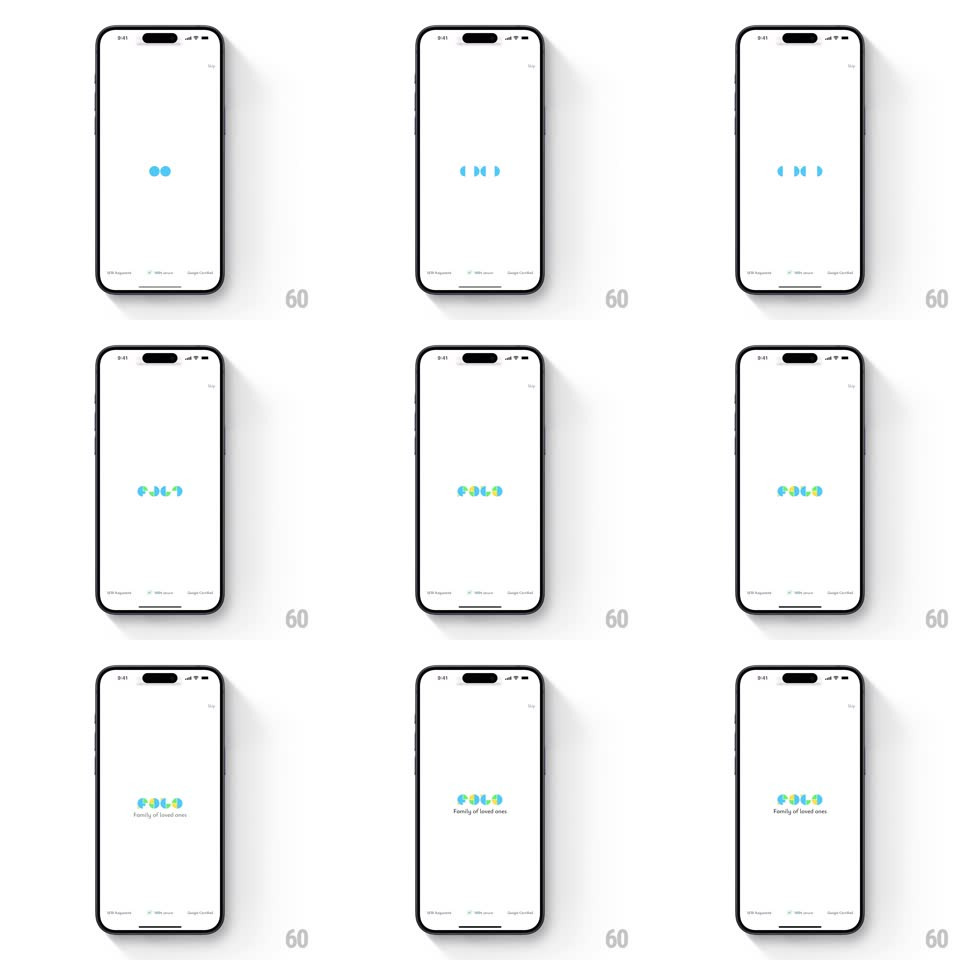

Media
Frame-by-frame

Rebuild this animation 1:1: FOLO's splash - a single blue dot multiplies into a row of circles that morph into the four-color pinwheel logo as the wordmark and tagline fade in.

Rebuild this animation 1:1: FOLO's splash - a single blue dot multiplies into a row of circles that morph into the four-color pinwheel logo as the wordmark and tagline fade in. ## Integration Integration: stack-agnostic spec - springs given as stiffness/damping, timed motions as duration + curve; map every value to your framework and animation library of choice. ## Scene White launch screen: a small blue dot centered, which becomes the FOLO pinwheel logo (four rounded blades in blue, teal, yellow, green) over the "FOLO" wordmark and the tagline "Family of loved ones". ## Motion spec Pattern: dot-morph logo splash, ~1.6s. - Dot: one blue circle scales in (spring ~400/18, 250ms). - Split: it divides into two circles side by side (slide apart 24px, 250ms, ease-in-out), then four (300ms). - Morph: the four circles deform into rounded pinwheel blades (border-radius morph, 350ms) while each takes its color (blue, teal, yellow, green, 200ms crossfade). - Settle: the pinwheel pops (scale 1.08 -> 1, spring ~420/20). - Text: "FOLO" fades up (250ms), then the tagline fades in below (250ms, +100ms). ## Calibration - The blades form from the circles - no new shapes appear; it is one continuous morph. - The pinwheel sits slightly above center, text below it. ## Reduced motion The logo fades in fully formed (300ms). ## Don't miss - The split is 1 -> 2 -> 4 circles, not straight to four. - Colors arrive after the morph starts, not with the split.